使用Hexo和Github搭建个人博客
【目录】
[toc]
一、如何实现的？
使用 GitHub Pages 服务搭建博客的好处有：
- 全是静态文件，访问速度快；
- 免费方便，不用花钱就可以搭建个人博客，不需要服务器不需要后台；
- 可以随意绑定自己的域名；
- 数据绝对安全，基于 GitHub 的版本管理，想恢复到哪个历史版本都行；
- 博客内容可以轻松打包、转移、发布到其它平台；
- 自己可以随性所欲的设计，美观大气上档次；
二、搭建步骤
2.1 原料准备及配置环境
1.提前注册好Github账号
注册账号这个过程不难，需要注意的事项有
账号的用户名将来会用作网址的构成，因此要注意想清楚。
如果无法访问github或者访问过程中比较卡顿，可以下载这个GitHub加速器：https://steampp.net/
2.安装Git
[Git - Downloads (git-scm.com)] 官网：(https://git-scm.com/downloads)
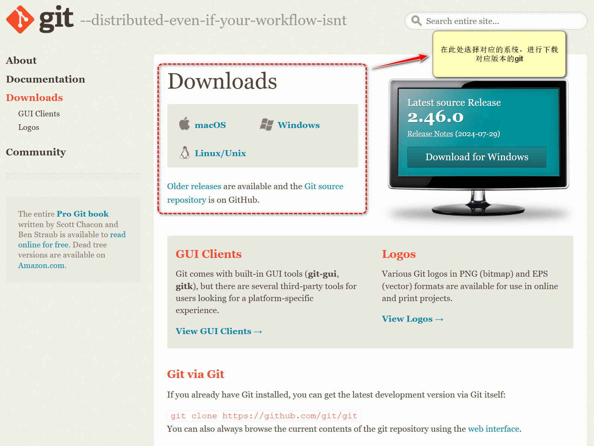文件大小约几十Mb，下载完成后，双击安装包开始安装，一路点击 Next 即可。
安装完毕后可以使用以下命令测试是否安装成功
1 | git --version |
后续Hexo框架的更新可以使用如下代码
git clone https://github.com/git/git
3.安装node.js
[Node.js — 在任何地方运行 JavaScript (nodejs.org)] 官网： (https://nodejs.org/zh-cn/)
文件大小约几十Mb，下载完毕后，开始安装，勾选所有组件，并勾选 Add to Path 将其添加到系统环境变量。
安装 Node.js 会包含环境变量以及 npm 的安装，安装后，可以在命令行输入如下命令检测 Node.js 是否安装成功：
第一个命令，这个命令，在 nodejs 安装成功的情况下会显示 nodejs 的版本号。
1 | node -v |

第二个命令：这个命令，在 nodejs 安装成功的情况下会显示 npm 的版本号。
1 | npm -v |

4.安装hexo
我们采用Hexo来创建我们的博客网站，Hexo 是一个基于NodeJS的静态博客网站生成器，使用Hexo不需开发，只要进行一些必要的配置即可生成一个个性化的博客网站，非常方便。Hexo 官网：https://hexo.io/zh-cn/
1 | npm install -g hexo-cli |
2.2 建立博客
2.2.1 hexo博客初始化
下面这个命令会在 “cmd”命令窗口所在的工作目录中， 生成一个名称为 “hexo-blog” 博客文件夹，并自动从下载博客所必须的文件放入其中。
1 | hexo init hexo-blog |
假设我使用这个默认名称 “hexo-blog”，那么这个“hexo-blog”文件夹就是我们博客的默认文件夹了。
当然上面这行代码等效于：
你手动建立了一个hexo-blog的文件夹，并且在该文件夹内运行cmd，输入hexo init 命令，自动下载hexo框架文件，进行初始化。
2.2.2 在hexo博客文件夹中安装npm
在博客根文件夹（hexo-blog）中，启动cmd命令行窗口。
运行下面的命令，在hexo文件夹中安装npm。
1 | npm install |
至此，本地的博客已经搭建完毕，等确认本地博客没有问题后，就可以上传到GitHub上，这样网友们就能访问你的博客了。
下面是博客文件夹中各个文件对应的用途。
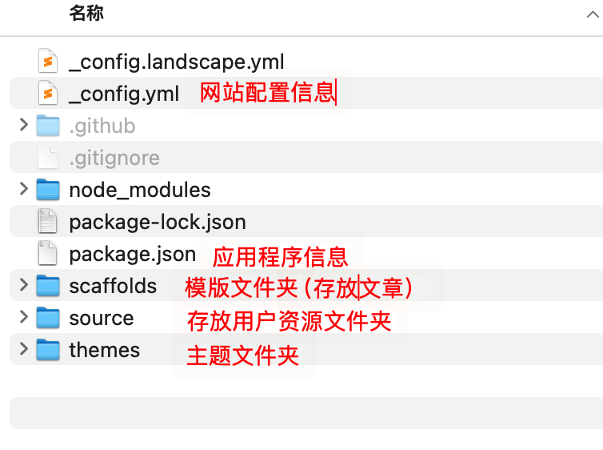2.3 本地化预览 + 新建博客文章
下面4个命令是 hexo 博客框架常用的命令。
1 | hexo cl |
hexo cl全称是hexo clean 清除缓存文件 db.json 和已生成的静态文件 public。网站显示异常时可以执行这条命令试试。
hexo g 全称是hexo generate 作用是把你写的markdown文件转换成html网页文件。
hexo s 全称是hexo server` 启动本地服务器，用于预览主题。默认地址： http://localhost:4000/
hexo d 是 hexo deploy 的缩写。 把本地的博客部署（上传）到GitHub上面去
2.3.1 本地化预览博客
由于步骤2.2 建立好了一个本地的博客，因此我们在博客根目录运行cmd，依次运行
hexo cl
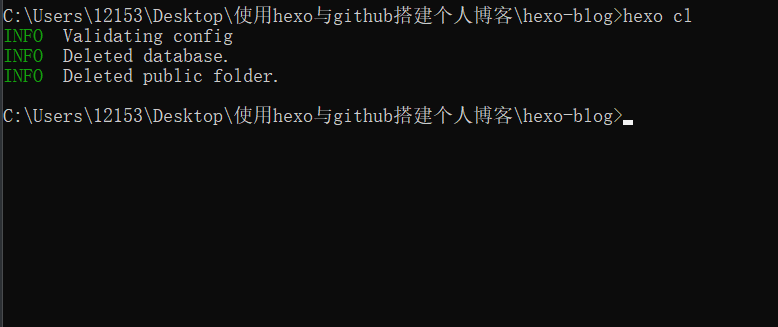hexo g
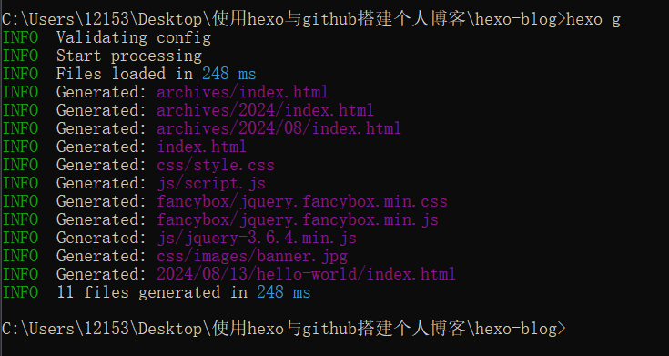hexo s
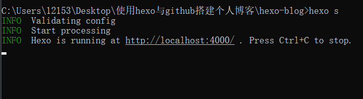复制http://localhost:4000 到浏览器，进行预览。
回到cmd窗口，按下 ctrl + c ，可以终止预览。
至此，可以确认本地化的博客已经建立完毕了。
2.3.2 新建博客文章
使用hexo n 我的周报，注意它们之间有空格。即可新建一个名称为“我的周报.md”的文件，储存在\hexo-blog\source\_posts。
当然，你也可以手动去\hexo-blog\source\_posts文件夹中新建md文件，效果也是一样滴。
我们先打开这个文件夹，看到里面只有官方自带的一篇hello-world.md文件。
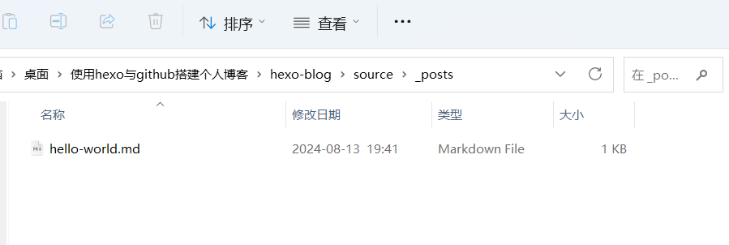接下来，我们使用下面的命令，会在这个文件夹中生成一个 搭建博客教程.md 文件
hexo n 搭建博客教程
可以看到确实生成了。
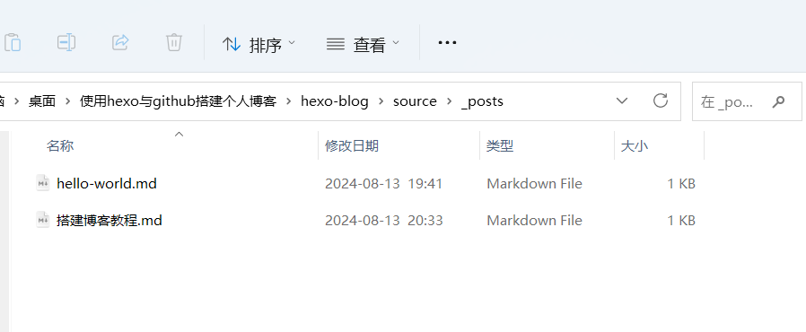手动新建一个md文件，可以来比较一下使用hexo n建立的md文件和手动新建的md文件 区别。
2.4 博客上传到Github
1. 使用你的github账号新建一个仓库
登录github，点击Your repositories，进入仓库页面。
点击New按钮，进入仓库创建页面。
填写仓库名，格式必须为<用户名>.github.io，然后点击Create repository。
例如，图片里的用户名yaorongke，则他建立的博客仓库名称必须为yaorongke.github.io
将来，图片中的博客的网址就是：https://yaorongke.github.io/
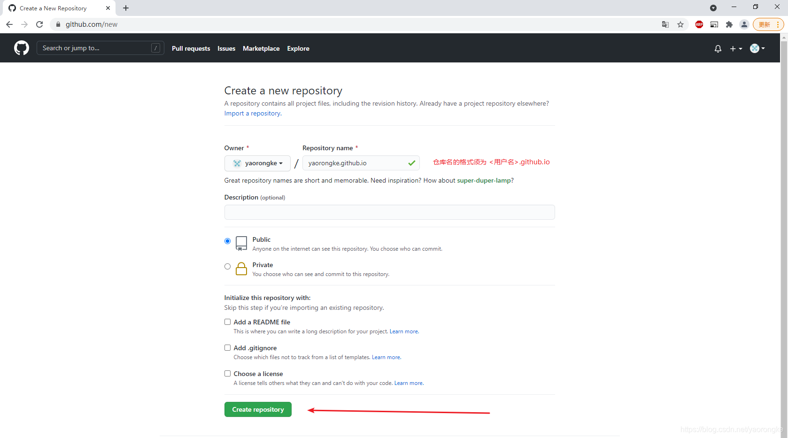2. 设置SSH——公钥和私钥
这一步是让你的电脑有资格与你的GitHub账号仓库建立联系。
1 | ssh-keygen -t rsa -C 注册时的邮箱地址 |
例如，我的github注册邮箱是erkesi@qq.com,因此我输入的就是下面这个命令
ssh-keygen -t rsa -C erkesi@qq.com
然后依次输入三次回车即可。
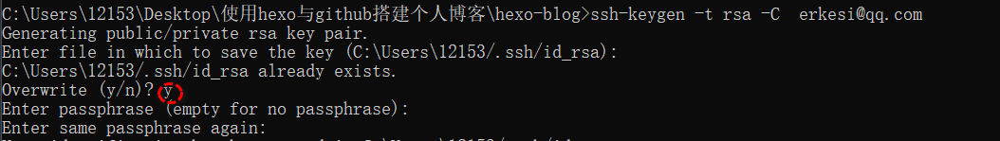我在第二个回车之后，那里输入了一个Y，是因为我这台电脑之前就生成过，必须覆盖（overwrite）那个旧文件我就输入了Y。
新手第一次运行的，直接依次按下3次回车即可。
成功后，接着去把ssh口令输入到GitHub。
用记事本打开如图所示刚刚生成的id_rsa.pub文件。 12153是我当前电脑的用户名。
（id_rsa是私钥，不能泄露；id_rsa.pub是公钥，无所谓）
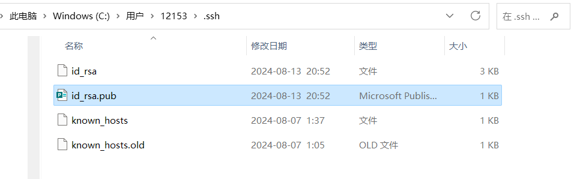复制这个文件内所有文本
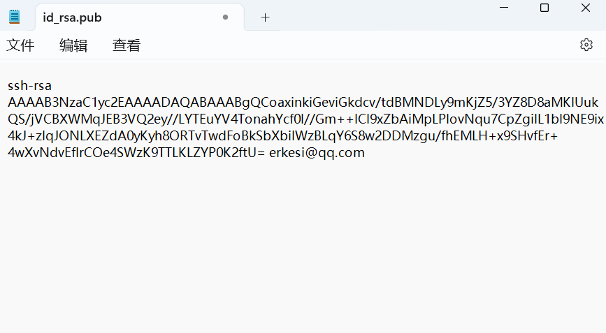打开网址 https://github.com/settings/ssh/new
Title 为标题，任意填即可 。 把刚刚粘贴的密钥复制进去，点击Add SSH key
使用下面的命令，验证是否成功建立本地和GitHub的联系。
ssh -T git@github.com
我第一次测试失败了是因为我开了加速器。我关闭之后再试了一次就成功了。
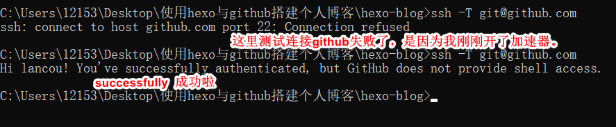3.在本地绑定 Github的用户名和邮箱
这样你去联系github，他才知道你这台电脑是使用了哪个账号去访问的刚刚那个仓库。
输入以下命令：让本地的私钥绑定你“注册时用户名”。 记得手动修改 lancou 成你的名称。 引号是英文的引号，别弄成了中文。
git config --global user.name “lancou”
输入命令：让本地的私钥绑定 “注册时邮箱” 。 记得手动修改 erkesi@qq.com 成你的github邮箱。
git config --global user.email "erkesi@qq.com"
运行结果如下图，不会给任何提示，没事的。
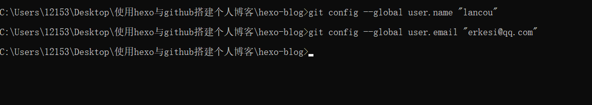4. 把本地博客上传到github
4.1 修改配置站点配置文件
hexo 有 2 种 _config.yml 文件，
一个是根目录下的全局的 _config.yml。 一般称为博客站点配置文件。
一个是各个主题 theme 文件夹下的 _config.yml。 称为主题配置文件。
打开根目录下博客站点配置文件 _config.yml，配置有关 deploy 的部分：
打开博客站点配置文件，找到deploy字段
修改成下面这段代码。
1 | # Deployment |
相当于是告诉Hexo框架，接下来你要把博客上传（部署）到哪里去。
其中你需要修改的地方是repo这一行，repo: git@github.com:昵称/仓库名称
我的GitHub昵称是lancou，创建的仓库名称我设置的是lancou.github.io，所以我的repo这一行代码如下
repo: git@github.com:lancou/lancou.github.io
记得照葫芦画瓢进行修改。
4.2 安装hexo上传（部署）工具
在博客的根目录下，运行cmd，输入下面的代码即可。 我2秒就安装完毕啦，飞一般地速度。
npm install hexo-deployer-git --save
依次运行下面的代码。
hexo cl
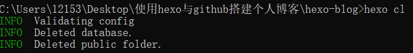hexo g
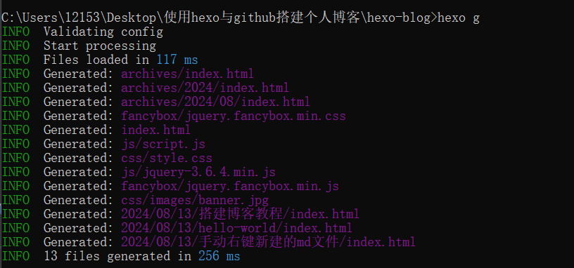hexo d
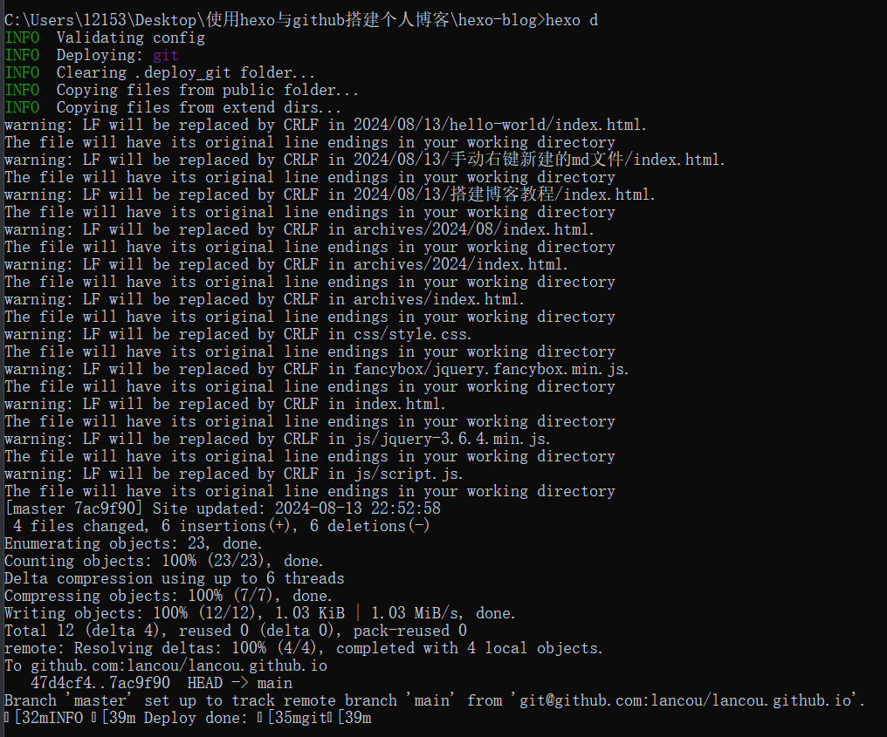可以看到我的上传过程中出现了 waring:LF will be replaced by CRLF
只需要运行这个命令即可解决 git config --global core.safecrlf false
我运行完这个命令后，又重新依次执行了hexo d （上传命令），现在上传就不会出现 waring 警告了。
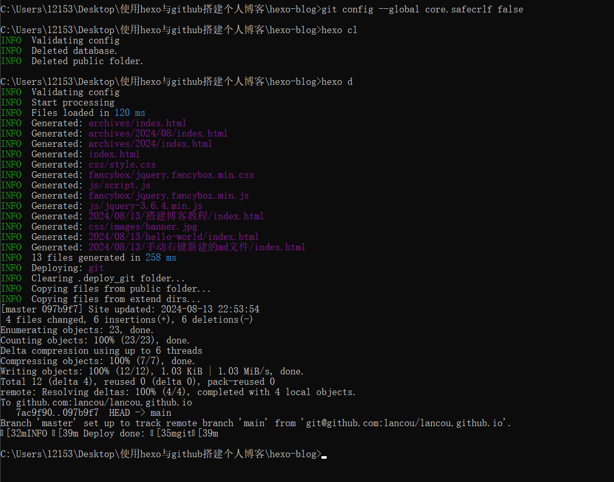至此，你已经上传本地的博客到你的GitHub仓库。
4.3 访问你的博客
我（昵称为lancou）的博客的网址为：lancou.github.io
同理，你的博客网址也应该是 用户名.github.io
结果我高高兴兴的打开我的博客,额。。。。。。。
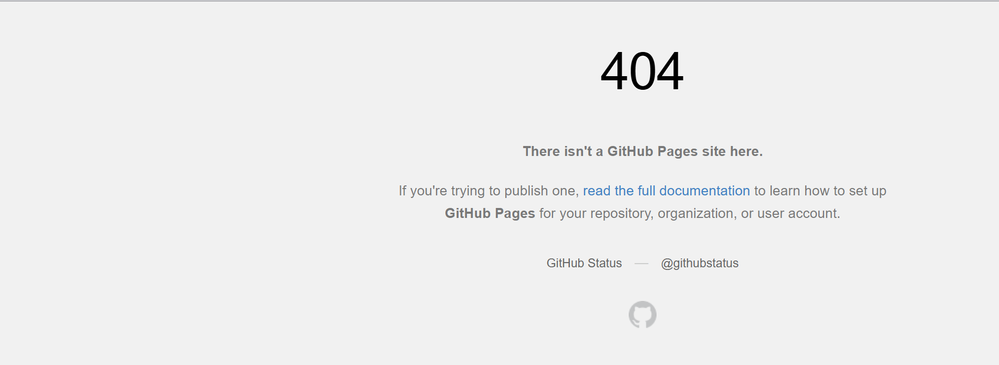下面是官方给的解释。意思是，如果你的网站是第一次发布或者是修改了昵称的话，官方需要花几分钟的时间帮你申请一个证书。
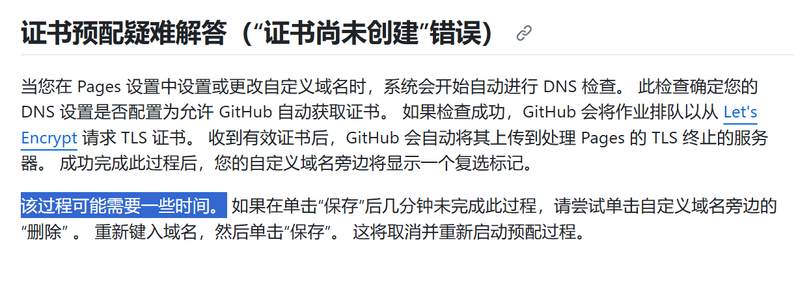几分钟之后，我的博客网页就可以正常访问啦！ https://lancou.github.io/
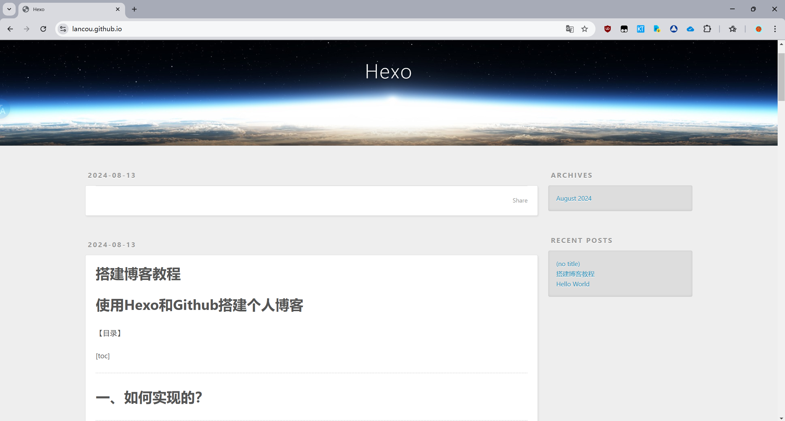三、（可选）使用Github提供的Action自动化部署更新博客
这里使用博客的GitHub账号，新建一个私有仓库，存储网站的必要文件，当这些博客文件被修改时，GitHub自动同步更新博客
1.获取github的token
为了确保交由Github Action来持续部署时，Github Action 具备足够的权限来进行 hexo deploy 操作,需要先获取 Token。
访问 Github ->头像（右上角）-> Settings -> Developer Settings -> Personal access tokens -> generate new token
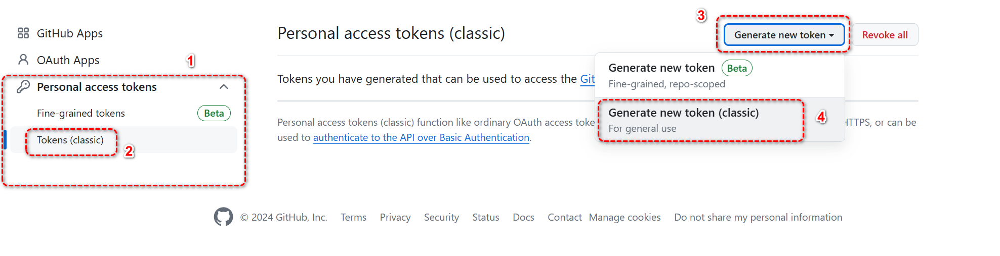创建的 Token 名称随意，但必须勾选 repo 项 和 workflows 项。
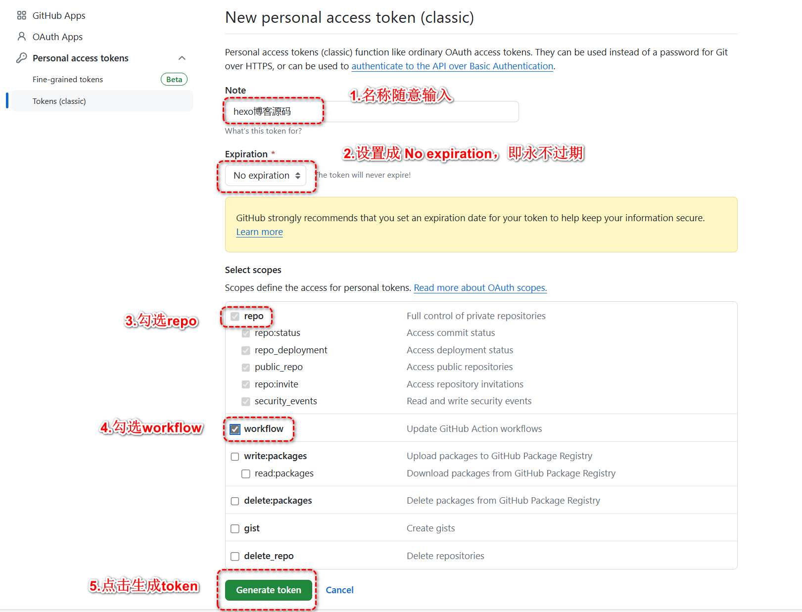token 只会显示这一次，之后将无法查看，所以务必保证你已经记录下了 Token。之后如果忘记了就只能重新生成重新配置了。
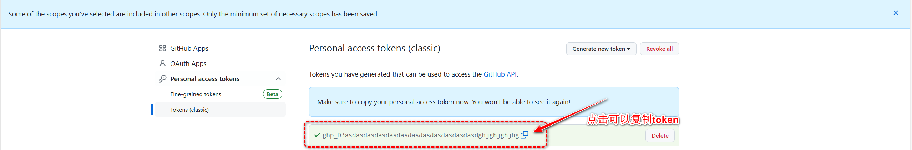2.创建存放源码的私有仓库
我们需要创建一个用来存放 Hexo 博客源码的私有仓库
这里之所以是私有仓库，是因为在接下来的配置中会用到 Token，如果 Token 被盗用，别人可以肆意操作你的 github 仓库内容，为了避免这一风险，才选择的博客源码闭源。
3.配置 Github Action
在
[博客的文件夹根目录]新建.github文件夹，注意开头是有个小数点.的。（如果这个文件夹已经存在了就跳过这一步）然后在
.github内新建workflows文件夹，再在workflows文件夹内新建autodeploy.yml,在autodeploy.yml里面输入
1 | name: 自动部署 |
4.重新设置远程仓库和分支
修改
.gitignore,输入以下内容1
2
3
4
5
6
7
8
9
10.DS_Store
Thumbs.db
db.json
*.log
node_modules/
public/
.deploy*/
.deploy_git*/
.idea
themes/next/.git
如果不是 next 主题，记得替换最后一行内容为你自己当前使用的主题。
（如果使用的是默认的主题，可以不用最后一行，但是默认主题有点丑啊，应该没有人用默认主题吧）
1 | 可能遇到的 bug |
- 开始重新设置远程仓库和分支
1 | git remote rm origin # 删除原有仓库链接 |
以后只需要使用这三行代码，在博客内容修改后，更新即可。
1 | git add . |
git commit -m “这里的文本用来提示作用，可以随意修改”
5. 异地修改博客
这里提供两种修改方法
方法一 不常用设备更新博客
这个远程设备我不常用，例如手机、别人的电脑、网吧等等，我又想更新我的博客该怎么办呢？
可以直接在网页上登录你的Github账号，在博客私有仓库（也就是我们教程中创建的用于保存博客源码的那个）中，
打开 source/_post，我们的博客源文件就在这里面。
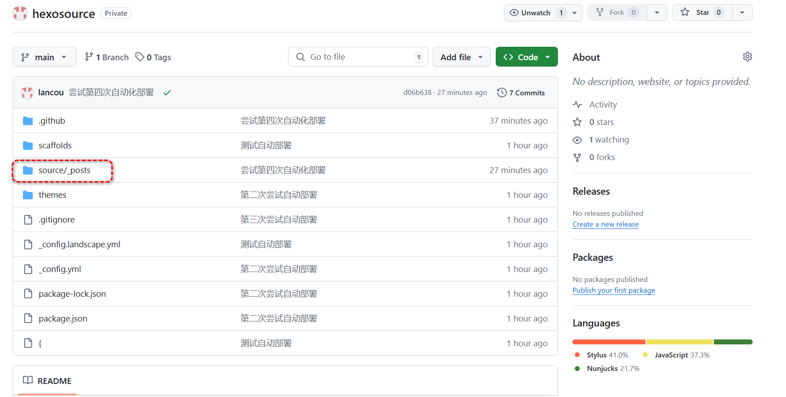 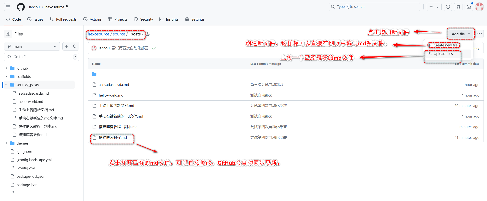切记：在网页中手动更新后，你的本地文件还是旧的，相当于本地版本与远程仓库版本不一样了，
在本地要使用一次 git pull origin main，把远程更改的文件同步到本地之后，本地才能继续把本地新修改的推送到远程。
参考文档：https://blog.csdn.net/yingmohuanzhou/article/details/138455235
下班最后一件事push代码，上班第一件事pull代码
假设你在朋友的电脑上登录你的GitHub账号，使用这种方法修改完成之后，回到家，你想使用自己的电脑再更新一份博客文件进行上传时，你依然遵循依次使用这三行代码进行更新，就会报错failed to push some refs to
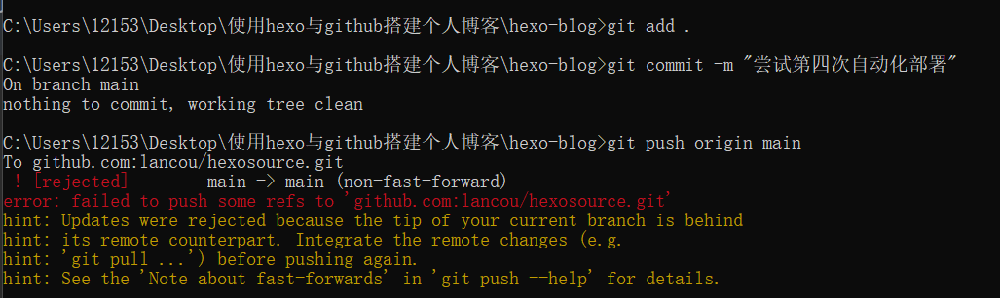原因：
当你尝试向你的 Git 仓库推送时遇到的错误消息表明，远程仓库中有你本地没有的更改。这种冲突阻止了 Git 推送你的更改，因为这可能会覆盖其他人所做的更改。
解决办法
- 在你推送你的更改之前，你需要将你的本地仓库与远程仓库同步。这可以通过从远程拉取更改来完成
1 | git pull origin main |
这个命令从名为 origin 的远程的 main 分支获取更新并将它们合并到你当前的分支。
1 | git add . #添加所有文件到暂存区 |
至此，问题完美解决，实现了本地和远程同步啦。
总结
只要本地仓库（本地的文件夹）内容和远程仓库内容不一致的时候，即本地的内容比仓库旧，
需要先进行 git pull origin main就能实现本地和远程仓库同步。
而修改了本地的博客文件后，就会实现本地的内容比远程仓库版本更新一些，push操作就不会报错。
（当本地的文件比博客文件旧，没有先进行pull，修改了本地文件之后，再进行pull时，git会自动保留最新的文件版本，本地新增的文件不会丢失，所以报错的时候直接git pull origin main即可实现同步，再进行push不会失败）
方法二 常用设备更新博客
你想在常用的两台电脑上更新你的博客，例如家里一台电脑、公司一台电脑。
需要让两台电脑都连上储存着博客源码的私有仓库。
这里先假设你是在家里的电脑上搭建的博客，但是想去公司更新博客，因此我们这里来讲一下如何使用公司的电脑进行博客的更新。
由于公司的电脑的环境没有进行配置，因此这里需要进行环境配置，参考本教程的
【1.1 安装Git】【2.4.2 设置SSH】、【2.4.3 在本地绑定与github的用户名和邮箱】
然后在公司电脑上建立一个文件夹用于储存博客文件，使用下面的代码将github仓库的博客原文件拉取到这个文件夹内。
1 | git clone git@github.com:lancou/hexosource.github.io. |
由于这个是私有仓库，新设备第一次拉取时会需要验证账号密码。
后面再想同步公司电脑（旧）与云端仓库（新）时，也可以使用git pull origin main来实现了。
当在公司修改了博客源文件之后，想把公司电脑上的本地仓库（新）同步到云端仓库（旧）
依次执行以下代码
1 | git add . #添加所有文件到暂存区 |
至此，你应该实现了在公司的电脑更新了你的博客。
注意，在公司的电脑更新了博客之后，公司电脑的版本=云端仓库的版本。
但此时云端仓库的版本（新）， 家里电脑的仓库版本（旧），回到家里面又想更新博客时
要先拉取云端仓库文件到本地 ，运行命令 git pull origin main
把你家里的电脑上的仓库（旧）更新成云端的版本（新），实现 家里电脑的仓库版本=云端仓库的版本
当此时在家里电脑上修改了博客源文件之后，想把家里电脑上的本地仓库（新）同步到云端仓库（旧）
依次执行以下代码
1 | git add . #添加所有文件到暂存区 |
至此，你应该实现了在家里的电脑更新了你的博客。
如此往复。。。。。。。。。
设备上改博客，最后一件事push代码； 换设备更新博客，第一件事pull代码
四、可能遇到的问题
1. themes对应主题下的.git文件夹被上传导致的错误
因为 next 主题文件夹下的.git 文件夹的存在，那么主题文件夹会被识别子项目。从而无法被上传到源码仓库。若是遇到添加屏蔽项，但是还是无法正常上传主题文件夹的情况。
1.剪切 themes/next/.git文件夹到其它处
2.从暂存区删除该文件夹
1 | git rm --cache themes/next |
3.使用git status查看状态

4.提交修改
1 | git add . #添加所有文件到暂存区 |
至此问题就解决了。
 wechat
wechat alipay
alipay